Chapitre 2 – Le Web
À la découverte du HTML et du CSS
</> À la découverte du HTML
Le contenu d’une page web est intégré dans un fichier d’extension .html. Ce type de fichier est écrit par un webmaster, ou généré par un serveur (dans le cadre du web dynamique) qui le renvoie au client. Le navigateur web lit ce fichier, et cette lecture permet au client de voir apparaître le contenu de la page sur son navigateur.
Voici à quoi ressemble le squelette « très simplifié » d’un fichier HTML :
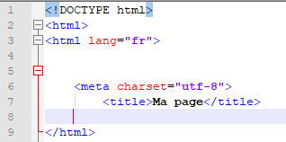
Pour construire une page web en HTML, il suffit d’ouvrir un éditeur de texte et d’y écrire le code, sous la forme d’un fichier ayant pour extension .html.
Le HTML est un langage dit balisé : pour écrire du contenu, on l’écrit entre des balises. Chaque balise opère une fonction sur le contenu.
Exemples : la balise <h1> </h1> met le texte en grand (titre) ; la balise <b> </b> met le texte en gras.
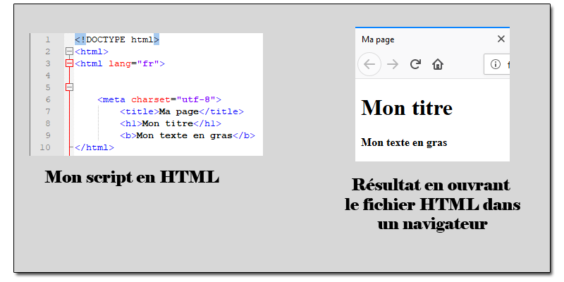
On observe une « correspondance » entre les balises et ce qui est affiché. Pour mieux l’observer, l’image ci-dessous met en couleur chaque balise en lien avec ce qu’elle affiche.
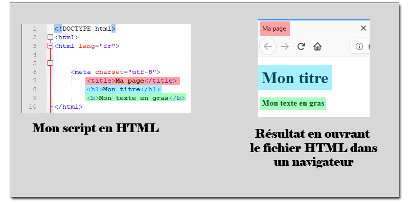
⬇ Récupérer les fichiers de travail
Pour les manipulations, tu as besoin du fichier mapage.html (le contenu de ta page) et du fichier css_eleve.css (son style). Télécharge-les dans un même dossier, nommé par exemple « Mon super site ».
Le dossier .zip contient les deux fichiers ci-dessus, les images et les pages de la séance (utiles pour tester les liens hypertextes de la manipulation 3).
Tu peux aussi voir le résultat de départ : ouvrir ma page web (nouvel onglet) ↗
M1 Manipulation 1 : Changer le titre de la page
- Aller dans le dossier « Mon super site » enregistré dans ton dossier personnel. Faire un clic droit sur le fichier
mapageet cliquer sur « Éditer avec Notepad++ ». - À la ligne 8 du fichier, modifier la ligne en indiquant ton nom et ton prénom. Sauvegarder le fichier en cliquant sur la disquette bleue en haut à gauche.
- Retourner dans le répertoire « Mon super site » et ouvrir le fichier
mapageavec un navigateur web.
Notepad++ est un éditeur de texte qui colorie automatiquement les balises. Il s’adapte aussi à plusieurs langages de programmation. Vous devriez voir apparaître une fenêtre identique à l’image ci-dessous :
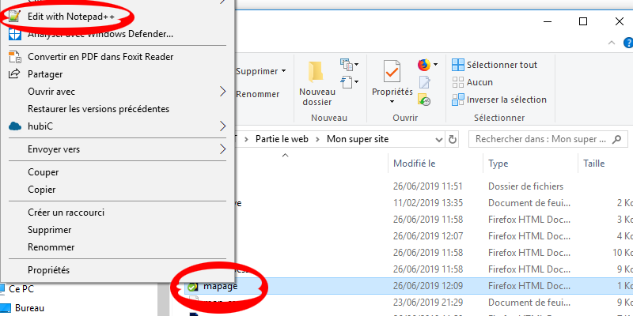
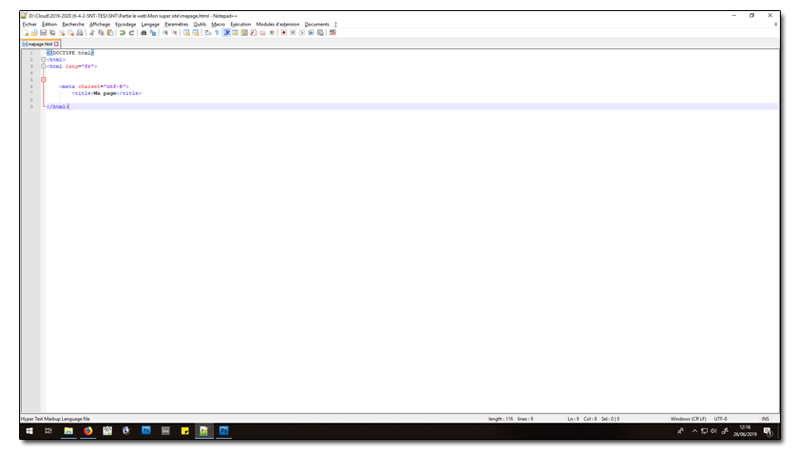
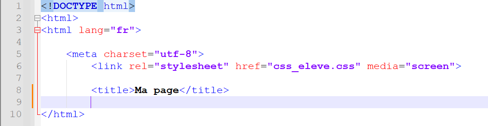
M2 Manipulation 2 : Insérer du texte
Retourner dans Notepad++ afin de continuer à éditer le fichier mapage.html. Nous allons insérer la suite du code, en faisant un saut de ligne pour chaque nouveauté.
- Utiliser les balises
<h1> </h1>pour écrire en titre : Ma page web en SNT (en ligne 9). - Utiliser les balises
<p> </p>pour un texte personnalisé (en ligne 10). - Sauvegarder le fichier, retourner sur le navigateur avec le fichier
mapagechargé. Pour rafraîchir la page, appuyer sur F5.
M3 Manipulation 3 : Insérer un lien vers une autre page du site
Les pages de la séance se situent dans le même répertoire que mapage.html (le dossier « Mon super site ») :
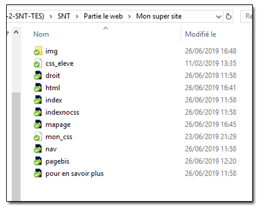
Le lien hypertexte a pour but de nous rediriger vers l’une des pages. Pour créer un lien hypertexte, nous avons besoin de la balise suivante :
<a href="chemin du fichier HTML">Texte affiché et cliquable</a>Le chemin relatif pour aller à la séance 1 est web-seance1.html, car les fichiers mapage.html et web-seance1.html se situent dans le même répertoire.
- Créer un lien hypertexte permettant de se rediriger vers la séance 1, grâce à la ligne de code :
<a href="web-seance1.html">Séance 1</a> - Créer un lien hypertexte permettant de se rediriger vers la séance 2 « Naviguer sur le web ». Le chemin relatif du fichier est :
web-seance2.html - Sauvegarder le fichier, retourner sur le navigateur avec le fichier
mapagechargé, puis rafraîchir la page avec F5.
M4 Manipulation 4 : Insérer un lien vers un autre site web
Pour créer un lien hypertexte vers un autre site web, il suffit de remplacer, dans la balise <a href="chemin du fichier HTML">, le chemin du fichier par l’adresse URL. Par exemple, pour créer un lien vers Google, on tape dans notre fichier HTML :
<a href="https://www.google.fr">Google</a>…ce qui donne le résultat suivant sur la page : Google.
- Créer 3 liens hypertextes redirigeant vers des sites : le site du Télégramme, le site de la CNIL, YouTube.
- Sauvegarder le fichier, retourner sur le navigateur avec le fichier
mapagechargé, puis rafraîchir la page avec F5.
M5 Manipulation 5 : Insérer une image
<img src="chemin du fichier image"> est la balise permettant d’afficher une image. Par exemple, le gif ci-dessous se situe, par rapport au répertoire courant, dans le répertoire img sous le nom gif4.gif. Le chemin relatif par rapport au fichier mapage.html est donc img/gif4.gif.
En tapant <img src="img/gif4.gif"> dans notre fichier HTML, on obtient ceci :
- Insérer le gif ci-dessus dans ta page web.
- Insérer l’image qui a pour ressource :
https://ih0.redbubble.net/image.468377772.5294/flat,550x550,075,f.u1.jpg - Sauvegarder le fichier, retourner sur le navigateur avec le fichier
mapagechargé, puis rafraîchir la page avec F5.
M6 Manipulation 6 : Créer un lien hypertexte sur une image
Pour qu’une image possède un lien hypertexte, il faut utiliser les deux balises : celle du lien hypertexte <a href="…">Google</a>, et celle de l’image. Au lieu d’écrire le texte « Google » entre les balises, on peut insérer une balise image. Par exemple :
<a href="https://www.google.fr"><img src="https://cdn-icons-png.flaticon.com/512/5968/5968863.png"></a>…donnera le résultat suivant :
- Créer une image dotée d’un lien hypertexte (différente de celle présentée ci-dessus).
- Sauvegarder le fichier, retourner sur le navigateur avec le fichier
mapagechargé, puis rafraîchir la page avec F5.
M7 Manipulation 7 : Intégrer une vidéo YouTube à la page
- Aller sur YouTube et choisir une vidéo.
- Sur la page de la vidéo, cliquer sur « Partager ».
- Puis cliquer sur « Intégrer ».
- Copier-coller le code généré par YouTube dans le fichier
mapage.html. - Sauvegarder le fichier, retourner sur le navigateur avec le fichier
mapagechargé, puis rafraîchir la page avec F5.
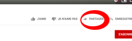
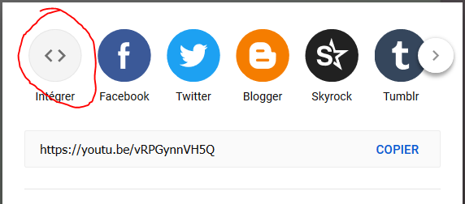
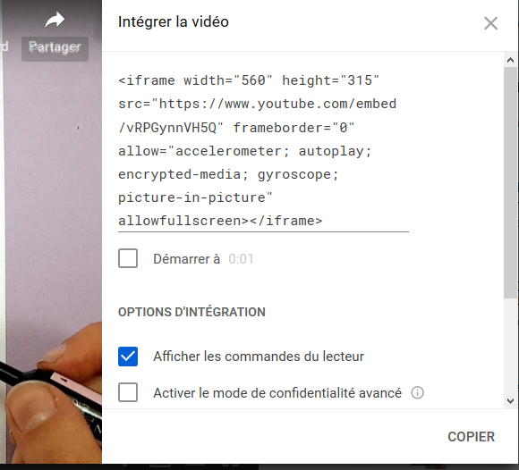
🎨 À la découverte du CSS
Après ces 7 manipulations, vous avez obtenu un résultat similaire à celui ci-dessous :
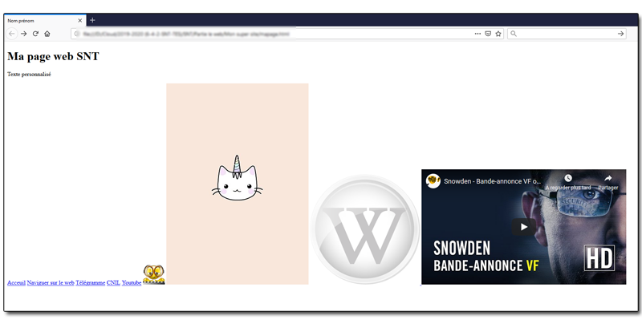
Le CSS est un langage web qui s’ajoute à un fichier HTML et permet d’éditer le design d’une page web. Ses paramètres sont chargés grâce à la balise suivante, placée dans le fichier HTML :
<link rel="stylesheet" href="css_eleve.css" media="screen">Elle indique où se situe le fichier css_eleve.css, qui contient les paramètres graphiques de la page.
Lancer dans Notepad++ le fichier css_eleve.css (clic droit, « Éditer avec Notepad++ »). Nous allons modifier quelques lignes de code.
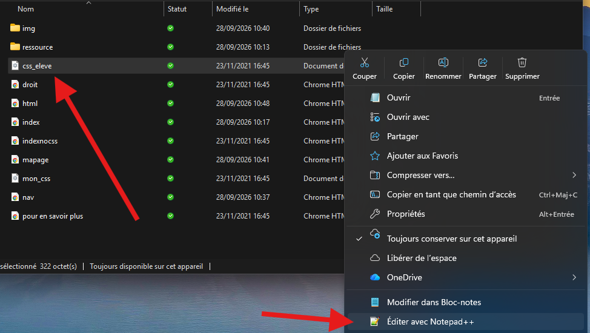
css_eleve.css avec Notepad++.À l’ouverture, vous devez obtenir ceci :
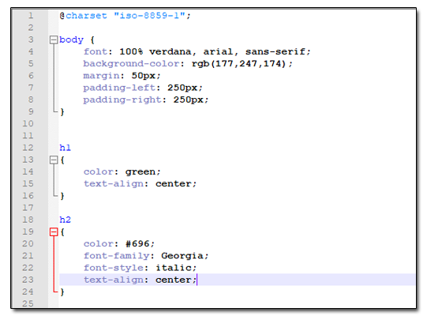
css_eleve.css.M8 Manipulation 8 : Mettre le texte des titres en rouge et celui des paragraphes en bleu
- À la ligne 15 du fichier CSS, il y a un bloc consacré au style de la balise
<h1>. À cette ligne, on acolor: green;. Remplacergreenparred. - Copier-coller à la fin du fichier le bloc suivant (il règle la couleur de la balise
<p>) : - Sauvegarder le fichier, retourner sur le navigateur avec le fichier
mapagechargé, puis rafraîchir la page avec F5.
p
{
color: blue;
}M9 Manipulation 9 : Changer la couleur du fond
La partie body du fichier CSS permet de modifier le corps de la page :
body {
font: 100% verdana, arial, sans-serif;
background-color: rgb(177,247,174);
margin: 50px;
padding-left: 250px;
padding-right: 250px;
}La ligne background-color: rgb(177,247,174); définit la couleur de l’arrière-plan de la page. Pour définir une couleur, rgb (red, green, blue) prend trois paramètres : une série de trois nombres compris entre 0 et 255. La combinaison de ces trois nombres permet d’obtenir une couleur.
Pour savoir quelles valeurs correspondent à telle couleur, vous pouvez ouvrir le logiciel Paint et cliquer sur « Modifier les couleurs ». Sélectionner une couleur et noter la valeur du rouge, du vert et du bleu.
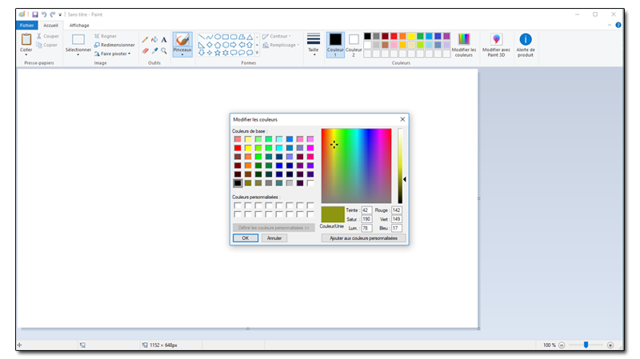
Ici, la couleur ocre a pour valeur rouge : 142, vert : 149, bleu : 17. En remplaçant background-color: rgb(177,247,174); par background-color: rgb(142,149,17);, la couleur de l’arrière-plan de la page sera ocre.
- Choisir une couleur dans les tons bleus et changer l’arrière-plan de la page par cette couleur.
- Sauvegarder le fichier, retourner sur le navigateur avec le fichier
mapagechargé, puis rafraîchir la page avec F5.
M10 Manipulation 10 : Mettre une image en arrière-plan
Pour mettre une image en arrière-plan, il faut remplacer background-color: rgb(177,247,174); par :
background-image: url("url de l’image");- Modifier l’arrière-plan de ta page web par l’image ayant comme adresse URL :
https://wallpapercave.com/wp/YpCO1pN.jpg - Sauvegarder le fichier, retourner sur le navigateur avec le fichier
mapagechargé, puis rafraîchir la page avec F5.
🕵️ Modifions le site du Likès à l’aide de l’inspecteur
- Regarder la vidéo.
- Tester l’inspecteur sur le site du Likès pour le modifier.